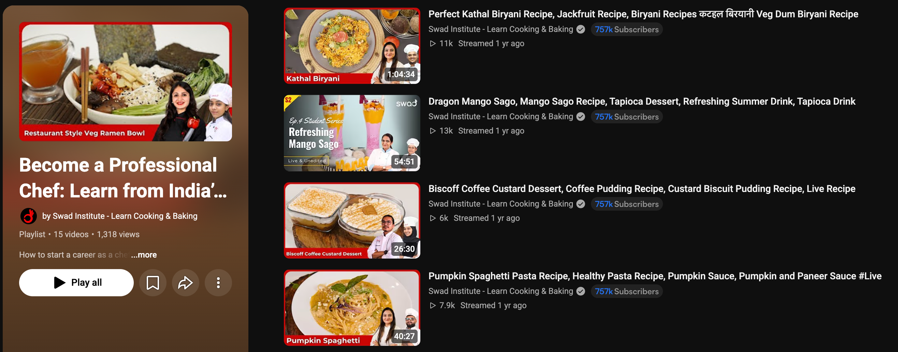

Case 01 · Student live systems · Swad Cooking Institute
Students as marketing assets
The one-year diploma was the institute’s highest-ticket course. Students became its strongest promoters through live sessions and shareable proof.
Context
The most valuable course needed more students
The one-year culinary and bakery diploma was the highest-ticket offer. Most diploma enrolments came from Instagram and YouTube, so the marketing job was to grow that funnel with proof that felt real.
Problem
Proof had to feel real, not like an ad
Prospective students needed to see the classroom, the chefs, and other students before they trusted a form fill. Polished ads alone were not enough.
Strategy
Put students on the live stream
Student-facing live sessions and diploma-oriented lives put students on an online stage. Viewers could see the classroom experience and hear from people taking the course, while students gained confidence and shareable proof of their learning. The content supported the institute’s enrolment funnel as one part of a wider team effort, not as sole credit for diploma revenue.

Related course and educational surfaces:
My role & execution
From campaign idea to live production and distribution
I pitched the student livestream concept to the owner and took ownership of producing and directing the campaign, coordinating the people, planning, live sessions and promotion.
Work output
Selected output
The livestreams are the primary campaign evidence, supported by Instagram reels promoting the student and diploma experience. The Swad Institute Careers page adds a side channel for student- and career-facing updates.
 YT Student livestream 01
YT Student livestream 01
 YT Student livestream 02
YT Student livestream 02
 YT Student livestream 03
YT Student livestream 03
 YT Student livestream 04
YT Student livestream 04
 YT Student livestream 05
YT Student livestream 05
 YT Student livestream 06
YT Student livestream 06
 YT Student livestream 07
YT Student livestream 07
 YT Student livestream 08
YT Student livestream 08
 YT Student livestream 09
YT Student livestream 09
 YT Student livestream 10
YT Student livestream 10
 YT Student livestream 11
YT Student livestream 11
 YT Student livestream 12
YT Student livestream 12
 YT Student livestream 13
YT Student livestream 13
 IG Reel Student reel
IG Reel Student reel
 IG Reel Diploma reel
IG Reel Diploma reel
 IG Reel Classroom reel
IG Reel Classroom reel
 IG Page Student & career updates
IG Page Student & career updates
Campaign results
5–6 new conversions across two sessions
The two livestream sessions generated approximately 5–6 new conversions for the one-year diploma. As a high-ticket course, those conversions represented meaningful commercial value for the institute.